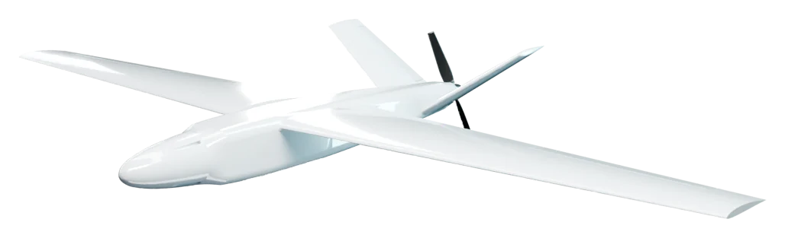
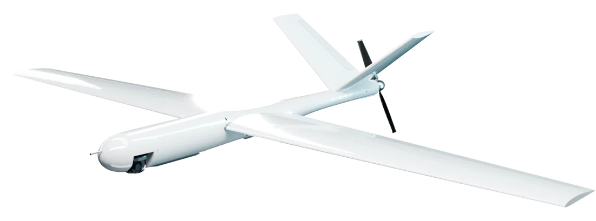

Airframe 1 · V6
SILM Buteo
The first airframe: a compact pusher with a wide fuselage, two top hatches and a camera behind a nose window.
1.4 m
wingspan
≈1.70 kg
all-up mass
~100 min
target endurance
Hand-launched, 3D-printed fixed-wing UAVs for long-endurance observation. Cheap to make, easy to repair, quick to reconfigure, and no runway or launch equipment needed.
Each has its own overview, CFD results and component layout.

The first airframe: a compact pusher with a wide fuselage, two top hatches and a camera behind a nose window.

The second airframe: a longer wing, a slimmer printed body and a gimbal camera under a clear dome.
UAV SILM is our own family of fixed-wing reconnaissance UAVs for ISR (Intelligence, Surveillance, Reconnaissance) use. SILM Buteo, the first airframe, is a 1.4 m pusher of about 1.7 kg; SILM Monedula, the second, has a 1.5 m wing and a slimmer body at about 1.8 kg. The aim is long-endurance observation on a low budget with a minimal logistics footprint.
Both are light enough to launch by hand and land on their belly, so no runway, catapult or launch rail is needed. Silm is the Estonian word for eye; Buteo is the Latin name of the buzzard, Monedula of the jackdaw.
Professional reconnaissance UAVs are expensive, often subject to export or trade restrictions, and hard to produce or adapt quickly in the field.
Small states and civil-defence organisations lack affordable, quickly built and easily maintained reconnaissance platforms that can be produced and repaired locally. We want to show that a capable platform can be designed and built on a small budget from commodity parts.
The long-term audience we have in mind is Estonia's defence and security sector (the Defence Forces, Kaitseliit, and the Police and Border Guard Board) and European defence development programmes. We have not held any discussions with these organisations; this is where we see the concept being useful.
Neither aircraft has flown yet. Figures are design estimates from CFD and calculation, not flight-test data.